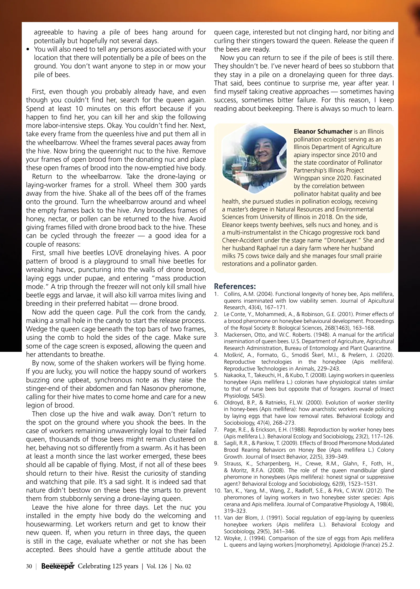

agreeable to having a pile of bees hang around for
potentially but hopefully not several days.
• You will also need to tell any persons associated with your
location that there will potentially be a pile of bees on the
ground. You don’t want anyone to step in or mow your
pile of bees.
First, even though you probably already have, and even
though you couldn’t find her, search for the queen again.
Spend at least 10 minutes on this effort because if you
happen to find her, you can kill her and skip the following
more labor-intensive steps. Okay. You couldn’t find her. Next,
take every frame from the queenless hive and put them all in
the wheelbarrow. Wheel the frames several paces away from
the hive. Now bring the queenright nuc to the hive. Remove
your frames of open brood from the donating nuc and place
these open frames of brood into the now-emptied hive body.
Return to the wheelbarrow. Take the drone-laying or
laying-worker frames for a stroll. Wheel them 300 yards
away from the hive. Shake all of the bees off of the frames
onto the ground. Turn the wheelbarrow around and wheel
the empty frames back to the hive. Any broodless frames of
honey, nectar, or pollen can be returned to the hive. Avoid
giving frames filled with drone brood back to the hive. These
can be cycled through the freezer — a good idea for a
couple of reasons:
First, small hive beetles LOVE dronelaying hives. A poor
pattern of brood is a playground to small hive beetles for
wreaking havoc, puncturing into the walls of drone brood,
laying eggs under pupae, and entering “mass production
mode.” A trip through the freezer will not only kill small hive
beetle eggs and larvae, it will also kill varroa mites living and
breeding in their preferred habitat — drone brood.
Now add the queen cage. Pull the cork from the candy,
making a small hole in the candy to start the release process.
Wedge the queen cage beneath the top bars of two frames,
using the comb to hold the sides of the cage. Make sure
some of the cage screen is exposed, allowing the queen and
her attendants to breathe.
By now, some of the shaken workers will be flying home.
If you are lucky, you will notice the happy sound of workers
buzzing one upbeat, synchronous note as they raise the
stinger-end of their abdomen and fan Nasonov pheromone,
calling for their hive mates to come home and care for a new
legion of brood.
Then close up the hive and walk away. Don’t return to
the spot on the ground where you shook the bees. In the
case of workers remaining unwaveringly loyal to their failed
queen, thousands of those bees might remain clustered on
her, behaving not so differently from a swarm. As it has been
at least a month since the last worker emerged, these bees
should all be capable of flying. Most, if not all of these bees
should return to their hive. Resist the curiosity of standing
and watching that pile. It’s a sad sight. It is indeed sad that
nature didn’t bestow on these bees the smarts to prevent
them from stubbornly serving a drone-laying queen.
Leave the hive alone for three days. Let the nuc you
installed in the empty hive body do the welcoming and
housewarming. Let workers return and get to know their
new queen. If, when you return in three days, the queen
is still in the cage, evaluate whether or not she has been
accepted. Bees should have a gentle attitude about the
queen cage, interested but not clinging hard, nor biting and
curling their stingers toward the queen. Release the queen if
the bees are ready.
Now you can return to see if the pile of bees is still there.
They shouldn’t be. I’ve never heard of bees so stubborn that
they stay in a pile on a dronelaying queen for three days.
That said, bees continue to surprise me, year after year. I
find myself taking creative approaches — sometimes having
success, sometimes bitter failure. For this reason, I keep
reading about beekeeping. There is always so much to learn.
Eleanor Schumacher is an Illinois
pollination ecologist serving as an
Illinois Department of Agriculture
apiary inspector since 2010 and
the state coordinator of Pollinator
Partnership’s Illinois Project
Wingspan since 2020. Fascinated
by the correlation between
pollinator habitat quality and bee
health, she pursued studies in pollination ecology, receiving
a master’s degree in Natural Resources and Environmental
Sciences from University of Illinois in 2018. On the side,
Eleanor keeps twenty beehives, sells nucs and honey, and is
a multi-instrumentalist in the Chicago progressive rock band
Cheer-Accident under the stage name “DroneLayer.” She and
her husband Raphael run a dairy farm where her husband
milks 75 cows twice daily and she manages four small prairie
restorations and a pollinator garden.
References:
1. Collins, A.M. (2004). Functional longevity of honey bee, Apis mellifera,
queens inseminated with low viability semen. Journal of Apicultural
Research, 43(4), 167–171.
2. Le Conte, Y., Mohammedi, A., & Robinson, G.E. (2001). Primer effects of
a brood pheromone on honeybee behavioural development. Proceedings
of the Royal Society B: Biological Sciences, 268(1463), 163–168.
3. Mackensen, Otto, and W.C. Roberts. (1948). A manual for the artificial
insemination of queen bees. U.S. Department of Agriculture, Agricultural
Research Administration, Bureau of Entomology and Plant Quarantine.
4. Moškriè, A., Formato, G., Smodiš Škerl, M.I., & Prešern, J. (2020).
Reproductive
technologies
in
the
honeybee
(Apis
mellifera).
Reproductive Technologies in Animals, 229–243.
5. Nakaoka, T., Takeuchi, H., & Kubo, T. (2008). Laying workers in queenless
honeybee (Apis mellifera L.) colonies have physiological states similar
to that of nurse bees but opposite that of foragers. Journal of Insect
Physiology, 54(5).
6. Oldroyd, B.P., & Ratnieks, F.L.W. (2000). Evolution of worker sterility
in honey-bees (Apis mellifera): how anarchistic workers evade policing
by laying eggs that have low removal rates. Behavioral Ecology and
Sociobiology, 47(4), 268–273.
7. Page, R.E., & Erickson, E.H. (1988). Reproduction by worker honey bees
(Apis mellifera L.). Behavioral Ecology and Sociobiology, 23(2), 117–126.
8. Sagili, R.R., & Pankiw, T. (2009). Effects of Brood Pheromone Modulated
Brood Rearing Behaviors on Honey Bee (Apis mellifera L.) Colony
Growth. Journal of Insect Behavior, 22(5), 339–349.
9. Strauss, K., Scharpenberg, H., Crewe, R.M., Glahn, F., Foth, H.,
& Moritz, R.F.A. (2008). The role of the queen mandibular gland
pheromone in honeybees (Apis mellifera): honest signal or suppressive
agent? Behavioral Ecology and Sociobiology, 62(9), 1523–1531.
10. Tan, K., Yang, M., Wang, Z., Radloff, S.E., & Pirk, C.W.W. (2012). The
pheromones of laying workers in two honeybee sister species: Apis
cerana and Apis mellifera. Journal of Comparative Physiology A, 198(4),
319–323.
11. Van der Blom, J. (1991). Social regulation of egg-laying by queenless
honeybee workers (Apis mellifera L.). Behavioral Ecology and
Sociobiology, 29(5), 341–346.
12. Woyke, J. (1994). Comparison of the size of eggs from Apis mellifera
L. queens and laying workers [morphometry]. Apidologie (France) 25.2.
30 |
Celebrating 125 years | Vol. 126 | No. 02